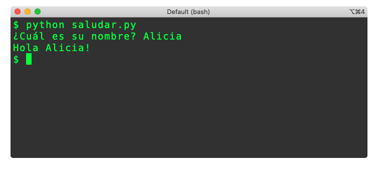

| Versión borrador / preliminar | |
|---|---|
| Este documento es una versión preliminar para uso interno. Si encuentra algún problema o error, o si tiene algún comentario por favor repórtelo a los autores |
Definición de funciones
Antes de empezar: archivos .py
Hasta el momento sólo hemos trabajado con pequeños programas que se pueden ejecutar y probar fácilmente en el REPL. A partir de este momento vamos a construir programas mucho más grandes que esperaríamos ejecutar varias veces.
En Python existe un concepto llamado módulo, que no es más que un archivo con definiciones de funciones e instrucciones adicionales. El nombre del archivo tiene que ser de la forma nombre_modulo.py, y todas las funciones que se definan dentro del archivo se considerarán parte del módulo.
La forma más usual para ejecutar un módulo es utilizar la línea de comandos e invocar el programa Python con el nombre del archivo. Por ejemplo, para ejecutar el módulo definido en el archivo hola_mundo.py es necesario usar la siguiente instrucción en la línea de comandos:
python hola_mundo.py.
Los módulos también se pueden ejecutar desde los IDEs, usando la funcionalidad que cada uno tiene para ello. En el caso de Spyder, lo que se tiene que hacer es ubicar el cursor sobre el archivo que contiene nuestro módulo, y presionar la tecla F9: veremos entonces el resultado de la ejecución en la ventana de la consola. También es posible ejecutar un módulo haciendo clic en el botón con un triángulo verde que se encuentra en la parte superior.
Finalmente, veamos que ejecutar un programa es exactamente lo mismo que ejecutar un módulo. Lo único que se debe notar es que usualmente un programa involucra varios módulos y que para ejecutar el programa se debe saber cuál es el módulo que se debe usar para iniciar el programa.
Un ejemplo completo
En la sección anterior definimos el concepto de función y lo ilustramos con varias funciones básicas del lenguaje Python. Como parte de esto, también se mostraron varios ejemplos de invocaciones a estas funciones y se presentaron las principales reglas para la evaluación de funciones. Esta sección completa la discusión sobre funciones en Python explicando cómo se pueden definir nuevas funciones.
Para empezar, presentamos un programa completo que al final de esta sección usted debería ser capaz de explicar y reconstruir. Léalo con cuidado, teniendo en que cuenta que cuando se habla de "una casa" se hace referencia a un dibujo como el siguiente:

# Este programa está en el archivo casa.py
def area_cuadrado(lado: int)-> int:
"""
Calcula el área de un cuadrado dada la medida de su lado
"""
return lado * lado
def area_triangulo(base: int, altura: int)-> float:
"""
Calcula el área de un triángulo dada la medida de la base y de la altura.
"""
return (base * altura) / 2
def area_casa(frente: int, techo: int)-> float:
"""
Calcula el área del dibujo de una casa que se forma con un cuadrado
y un triángulo encima (el techo).
El frente de la casa será igual al lado del cuadrado y a la base del triángulo.
La altura del techo será la altura del triángulo.
"""
cuadrado = area_cuadrado(frente)
triangulo = area_triangulo(frente, techo)
return cuadrado + triangulo
medida_frente = 7
medida_techo = 5
resultado = area_casa(medida_frente, medida_techo)
print("El área de una casa con", medida_frente, "metros de frente y un techo de",
medida_techo, "metros de alto es ", round(resultado, 2), "metros")
Como siempre, no se preocupe si hay cosas en el programa anterior que no haya entendido: todo se irá aclarando a lo largo de la sección.
Definición de funciones en Python
En la sección anterior vimos que Python incluye varias funciones que nosotros podemos utilizar aunque no sepamos cuáles sean exactamente las instrucciones que ejecuta cada una. Lo que conocemos nosotros de esas funciones es lo que llamamos signatura, la cual incluye el nombre, los parámetros que espera y su retorno. Lo que desconocemos es el cuerpo o implementación de las funciones, es decir las instrucciones que hacen que la función cumpla con lo que se espera de ella.
La signatura de una función
La signatura de una función puede verse como la especificación de las reglas para utilizar la función y está compuesta por tres cosas:
El nombre. Este debería ser un nombre claro y fácil de recordar. Además, no debería estar repetido para que no haya ambigüedad cuando se quiera invocar a la función.
Los parámetros. Estos son los valores que se le tienen que pasar a la función cuando se quiera invocar. Pueden verse como la información que tiene que proporcionar quien llame a la función para que se pueda cumplir con su objetivo. Una función puede tener uno o varios parámetros.
El resultado. En tercer lugar, tenemos información sobre el resultado de la función que nos dice si será un número, una cadena de caracteres o cualquier otra cosa.
Volvamos ahora al ejemplo para identificar estos elementos:
def area_cuadrado(lado: int)-> int:
"""
Calcula el área de un cuadrado dada la medida de su lado
"""
return lado * lado
En este ejemplo, se está definiendo una función y se ha incluido tanto la signatura como el cuerpo. Por ahora vamos a analizar sólo la signatura, que en este caso corresponde a la primera línea del ejemplo.
Lo primero que nos encontramos es la palabra reservada1 de Python def que nos marca el inicio de la definición de una función. La signatura de la función va hasta los dos puntos (:) que se encuentran al final de la línea.
Después de la palabra def, viene el nombre que le queremos dar a la función. En este caso escogimos area_cuadrado para expresar claramente su objetivo: será una función para calcular el área de un cuadrado. Como los nombres de las funciones no pueden tener espacios, hemos separado las dos palabras usando el símbolo _2.
El siguiente punto es la definición de los parámetros de la función, así que deberíamos hacernos la pregunta: ¿si queremos calcular el área de un cuadrado, qué información requerimos para poder hacer el cálculo? En este caso la respuesta es que sólo necesitamos la medida del lado del cuadrado. Es decir que necesitamos un parámetro en la función y que ese parámetro debería representar la longitud del lado del cuadrado.
En nuestro ejemplo, el parámetro está especificado en la parte que dice lado: int. Esto significa que la función esperará un solo parámetro, que nos vamos a referir a ese parámetro como lado, y que ese parámetro debería ser un número entero (int). Los parámetros siempre se especifican dentro de un par de paréntesis.
Finalmente encontramos la especificación del resultado de la función. En nuestro ejemplo, la signatura especifica que su resultado será un número entero con el fragmento que dice -> int.
En resumen: la signatura de una función especifica cómo se debería invocar la función y qué se debería esperar como resultado. En nuestro caso de ejemplo, la función se invocará con el nombre area_cuadrado, requerirá que se use un parámetro de tipo int y generará como resultado otro número entero (int).
Un segundo ejemplo
Analicemos ahora la segunda función de nuestro ejemplo:
def area_triangulo(base: int, altura: int)-> float:
"""
Calcula el área de un triángulo dada la medida de la base y de la altura.
"""
return (base * altura) / 2
¿Qué nos dice la signatura con respecto a la función?
- ¿Cómo se llama la función?
- ¿Cuántos parámetros se requieren para su invocación?
- ¿De qué tipo son los parámetros?
- ¿De qué tipo será el resultado de la función?
Lo único diferente con respecto al primer ejemplo es que tenemos dos parámetros en lugar de uno y que esos dos parámetros se separaron utilizando una coma.
Actividades:
- Escriba la signatura de una función que sirva para calcular el área de un círculo dado su radio.
- Escriba la signatura de una función que sirva para calcular la velocidad final de un objeto que tiene una velocidad inicial y acelera a una tasa constante durante una cierta cantidad de tiempo.
El cuerpo de una función
Pasamos ahora a estudiar el cuerpo de la primera función y lo primero que debemos notar es que todo el cuerpo está indentado. Esto quiere decir, que todo lo que hace parte del cuerpo de la función está escrito con un margen hacia la derecha. En este ejemplo particular el margen se ha creado usando 4 caracteres en blanco, lo cual corresponde a las buenas prácticas recomendadas de la comunidad Python.
def area_cuadrado(lado: int)-> int:
"""
Calcula el área de un cuadrado dada la medida de su lado
"""
return lado * lado
Cuidado: La indentación no es opcional en Python, sino obligatoria. El cuerpo de todas las funciones tiene que estar indentado y el margen utilizado debe ser consistente: si una línea usa un cierto margen y la siguiente tiene más o menos caracteres, se producirá un error. La recomendación en este libro será siempre utilizar 4 caracteres en blanco para la indentación.
Las primeras líneas del cuerpo de esta función nos muestran otra forma de introducir comentarios en un programa, esta vez asociados a una función. En Python, si la primera línea del cuerpo de una función inicia con una cadena de caracteres, esa cadena se convertirá en la documentación asociada a la función y aparecerá cuando alguien llame a la función help usando el nombre de nuestra función.
En general, siempre debería incluirse documentación en las funciones, por más sencillas y evidentes que sean. En este ejemplo se ha incluido sólo una documentación breve para la función area_cuadrado, pero para casos más complejos habría sido conveniente documentar también los parámetros y el retorno de la función. Más adelante estudiaremos algunas buenas prácticas para completar la documentación de las funciones.
Además de la documentación, el cuerpo de la función area_cuadrado sólo tiene una instrucción:
return lado * lado
La interpretación de esta instrucción es muy sencilla: cuando se ejecute esta instrucción, la función deberá retornar el valor de la expresión lado * lado. En el contexto de la ejecución de una función, retornar hace referencia a responderle con un valor a quien haya invocado la función. Esto quiere decir que cuando se llega a una instrucción return, la ejecución de la función termina y se responde con un valor de acuerdo a lo especificado en la signatura de la función.
Ahora bien, antes de retornar un valor, es necesario que Python evalúe la expresión lado * lado y encuentre a qué valor equivale. Si no tuviéramos contexto, lo que podríamos suponer es que lado fuera el nombre de una variable y que la expresión está calculando el cuadrado de la variable. En realidad, no hemos definido ninguna variable con ese nombre, pero sí tenemos un parámetro con ese nombre en la signatura de la función. La expresión lado * lado está haciendo entonces referencia al parámetro que le pasen a la función cada vez que la invoquen.
Viendo todo en conjunto, lo que pasará cuando alguien invoque a nuestra función es lo siguiente:
- El que invoque la función, tendrá que darle un valor al parámetro lado. La invocación podría ser algo como
area_cuadrado(4). - Nuestra función intentará ejecutar la instrucción
return lado * lado. Como la parte derecha es una expresión cuyo valor se desconoce, se tendrá que evaluar primero. - Para evaluar la expresión
lado * ladose debe conocer el valor delado. Como es un parámetro, entonces se tomará el valor que se le haya dado cuando se invocó a la función. En este caso, la expresión se convertiría en4 * 4. - Como la expresión sigue sin tener un valor, se ejecuta la operación de multiplicación y la expresión se convierte en el valor
16. - Se ejecutará la instrucción
return 16: terminará la ejecución de la función y el valor 16 se le pasará al que haya invocado la función.
Un segundo ejemplo
Analicemos ahora la segunda función de nuestro ejemplo:
def area_triangulo(base: int, altura: int)-> float:
"""
Calcula el área de un triángulo dada la medida de la base y de la altura.
"""
return (base * altura) / 2
- ¿Qué hace el cuerpo de esta función?
- ¿Qué diferencias tiene con respecto al cuerpo de la primera función?
Actividades:
- Escriba el cuerpo de la función para calcular el área de un círculo dado su radio. Utilice la signatura que definió en la actividad anterior.
- Escriba el cuerpo de la función para calcular la velocidad final de un objeto. Utilice la signatura que definió en la actividad anterior.
Definir vs. Invocar
Hasta el momento hemos descrito en detalle solamente la forma en la que se define una función, pero no hemos estudiado cómo se invoca una función. Es muy importante tener muy clara la diferencia entre estas dos acciones: cuando definimos una función, sólo le estamos enseñando a Python cómo debería invocarse esa función y cómo debería comportarse un programa cuando la función se invoque; cuando invocamos una función, le estamos pidiendo a Python que ejecute el cuerpo de la función, dándole valores específicos a cada uno de sus parámetros.
Revisaremos a continuación la última parte del programa de ejemplo con el que inició esta sección. Para simplificar el ejemplo hemos eliminado la documentación de la función area_casa.
def area_casa(frente: int, techo: int)-> float:
cuadrado = area_cuadrado(frente)
triangulo = area_triangulo(frente, techo)
return cuadrado + triangulo
medida_frente = 7
medida_techo = 5
resultado = area_casa(medida_frente, medida_techo)
print("El área de una casa con", medida_frente, "metros de frente y un techo de",
medida_techo, "metros de alto es ", round(resultado, 2), "metros")
Definición de la función
Lo primero que se debe notar en este ejemplo es que las primeras 4 líneas hacen parte de la definición de la función area_casa mientras que el último bloque de instrucciones está por fuera de esta función. Esto es evidente gracias a la indentación: las instrucciones indentadas después de la signatura de la función, hacen parte del cuerpo de la función. Tan pronto encontramos instrucciones que no están indentadas significa que hemos encontrado el fin del cuerpo de la función.
Con respecto a las funciones anteriormente estudiadas, la signatura de la función area_casa sólo tiene una pequeña diferencia: utiliza diferentes tipos de datos (sus parámetros son int y su resultado es float).
En cambio, el cuerpo de la función tiene un par de diferencias mucho más interesantes. La primera es que dentro de esta función se definen dos variables (cuadrado y triangulo). Estas variables son locales, lo cual significa que sólo existirán dentro del contexto de una invocación a la función. Si se habla de esas variables por fuera del cuerpo de la función, se producirá un error porque esos nombres sólo están definidos dentro del alcance de la función area_casa.
La segunda diferencia interesante tiene que ver con la forma en la que se le asignan valores a las nuevas variables. En el caso de la variable cuadrado, se le está asignando el valor obtenido al invocar la función area_cuadrado utilizando como argumento el valor del parámetro frente. En otras palabras, cuando se quiere calcular el área de una casa dada la medida de su frente y la altura de su techo, lo primero que se hace es calcular el área del cuadrado utilizando para eso la función area_cuadrado, dándole a su parámetro lado el valor que se le haya dado al parámetro frente.
La segunda instrucción hace algo similar para darle un valor a la variable triangulo. En este caso, la invocación se hace a la función area_triangulo y se utilizan como argumento los valores de los parámetros frente y techo.
La tercera instrucción de la función calcula la suma de las dos variables y retorna el resultado.
El nombre que se le da a un parámetro en la signatura de una función sólo es importante dentro del cuerpo de esa función. En el caso del ejemplo, la función area_cuadrado tiene un parámetro llamado lado, pero quien invoca a esa función no tiene por qué usar el mismo nombre para sus propios parámetros o variables.
Invocación de la función
Si nuestro programa tuviera sólo las instrucciones que ya estudiamos, no veríamos nada pasando cada vez que lo corriéramos. Su ejecución se limitaría a definir las funciones una y otra vez, pero sin invocarlas ni una sola vez. En este contexto es que se vuelven interesantes las últimas instrucciones del archivo, las cuales repetimos a continuación:
medida_frente = 7
medida_techo = 5
resultado = area_casa(medida_frente, medida_techo)
print("El área de una casa con", medida_frente, "metros de frente y un techo de",
medida_techo, "metros de alto es ", round(resultado, 2), "metros")
Recuerde que estas instrucciones no hacen parte de la definición de ninguna función, así que se ejecutarán cada vez que el programa se corra. Las dos primeras instrucciones hacen asignaciones sobre dos nuevas variables llamadas medida_frente y medida_techo con los valores 7 y 5.
A continuación, se hace una nueva asignación, pero esta vez el valor se calcula con una invocación a la función area_casa. En esta ocasión la función sí se ejecuta, utilizando los valores 7 y 5 como argumentos de la invocación. Si nosotros no conociéramos el cuerpo de la función, lo único que podríamos ver es que el resultado de invocar la función quedaría asignado a la variable resultado.
En este caso, como sí conocemos el cuerpo de la función, sabemos que lo que ocurrirá es lo siguiente:
- Se invocará a la función
area_cuadradousando el valor 7 como valor para el parámetrolado. - Se calculará y retornará el valor de la expresión
lado * ladoque se encuentran en el cuerpo dearea_cuadrado. En este caso, el valor retornado será49y ese valor se almacenará en la variable temporalcuadrado. - Se invocará a la función
area_triangulousando los valores 7 y 5 como valores para los parámetrosbaseyaltura. - Se calculará y retornará el valor de la expresión
(base * altura) / 2que se encuentran en el cuerpo dearea_triangulo. En este caso, el valor retornado será17.5y ese valor se almacenará en la variable temporaltriangulo. - Se calculará la suma de
cuadradoytrianguloy se retornará el valor. Las variablescuadradoytriangulodejan de existir en este momento porque terminó la ejecución de la función en la que fueron definidas. - El valor retornado se almacenará en la variable
resultado.
Finalmente se debe ejecutar la última instrucción del programa, que en este caso es una invocación a la función print. Como ya sabemos, esta función le mostrará al usuario los valores que se le pasen como parámetro, separándolos con un espacio. Sin embargo, los argumentos que se están usando para llamar a la función print incluyen la expresión round(resultado, 2). Esto quiere decir que antes de que se empiece a ejecutar la función print se llamará a la función round y se obtendrá un valor redondeado para la variable resultado. Esto es un ejemplo del uso de invocaciones a funciones como argumentos de una invocación a otra función.
Ejecución de un programa
Volvamos ahora a la discusión del inicio de la sección sobre cómo se ejecuta un módulo y revisemos lo que pasa en cada paso. Para eso, tomemos como ejemplo el siguiente programa, que suponemos que está escrito en el archivo 'saludar.py':
def saludar(nombre: str)-> str:
return "Hola " + nombre + "!"
nombre = input("¿Cuál es su nombre? ")
saludo = saludar(nombre)
print(saludo)
La siguiente imagen muestra cómo se ejecutó el programa y el resultado de la ejecución:

Ahora analicemos lo que ocurrió en cada paso de la ejecución:
- Al invocar al programa 'python' usando como parámetro el nombre de archivo 'saludar.py', el archivo se abre y Python empieza a revisarlo bloque por bloque e instrucción por instrucción.
- En primer lugar, se encuentra con la definición de la función
saludar. Python revisa que la signatura esté definida con la sintaxis correcta. Por ejemplo, si el parámetro dijera que es de tiposrren lugar destr, habría aparecido un error diciendoNameError: name 'srr' is not defined. - Ahora Python revisa todas las instrucciones que se encuentran en el cuerpo de la función, que en este caso es solamente una. La revisión es, nuevamente, sintáctica (sólo está revisando que el código esté bien escrito, no que sea correcto).
- Como terminó la definición de la función, Python almacena la definición en un registro por si más adelante alguien invoca a una función con ese nombre y ese número de parámetros. Note que hasta este punto la función no se ha ejecutado.
- Se revisa ahora lo siguiente en el archivo, que es una instrucción de asignación. Como sabemos, lo primero que se hace es evaluar la parte de la derecha que en este caso requiere invocar la función
input. En la captura de pantalla vemos que el mensaje se imprimió para preguntarle al usuario por su nombre y que el usuario respondió con su nombre ('Alicia'). Finalmente, esta cadena queda almacenada en la variablenombre. - La siguiente instrucción también es una asignación, así que se evalúa la parte derecha primero. En este caso se debe invocar la función
saludar, usando como parámetro el valor almacenado en la variablenombre: es ahora cuando se ejecuta por primera vez nuestra funciónsaludar. - La siguiente instrucción que se ejecuta es la instrucción que se encuentra dentro del cuerpo de la función. Lo primero que hace esta función es calcular el valor de la expresión
"Hola " + nombre + "!". En el caso del ejemplo, el valor del parámetronombrees la cadena'Alicia', así que el valor de la expresión completa es la cadena'Hola Alicia!'. Finalmente, se retorna esta cadena completa y termina la ejecución de la función. - De vuelta al programa principal, el resultado de la función se almacena en la variable
saludo. - Por último, se invoca la función
printy se le pasa como argumento el valor contenido en la variablesaludo. El programa imprime entoncesHola Alicia!tal como se ve en la captura de pantalla.
El siguiente es nuevamente el código de nuestro programa, pero esta vez hemos incluido unos comentarios adicionales que indican el orden en el que se van ejecutando las instrucciones.
def saludar(nombre: str)-> str: #1
return "Hola " + nombre + "!" #4
nombre = input("¿Cuál es su nombre? ") #2
saludo = saludar(nombre) #3 #5
print(saludo) #6
Actividades:
- Cree el módulo "cuadrados.py" y defina una función que calcula el perímetro de un cuadrado y otra que calcula su área. Agregue al archivo las instrucciones para preguntarle al usuario por el lado de un cuadrado y luego mostrarle el perímetro y el área de un cuadrado con esa medida.
Funciones sin parámetro o sin retorno
Dos preguntas frecuentes entre los estudiantes son si una función siempre debe tener parámetros y si una función siempre debe retornar un valor. Si estas preguntas se hicieran en un contexto matemático, la respuesta sería positiva: las funciones establecen relaciones entre elementos de un conjunto y elementos de otro conjunto, así que siempre tienen al menos un parámetro y siempre tienen un resultado.
En el contexto de Python, sí es posible tener funciones sin parámetros y funciones que no tengan un retorno, pero la realidad es que este tipo de funciones sólo deberían usarse en un contexto muy particular (interacción con el usuario). A continuación, explicamos brevemente por qué, en general, no es una buena idea tener este tipo de funciones.
Funciones sin parámetros
Si una función no tiene parámetros, en principio siempre va a retornar el mismo valor. Si esto fuera cierto, en lugar de tener una función para calcular el valor, se debería tener una variable donde ese valor estuviera disponible para utilizarlo cuando fuera necesario.
Python incluye algo así para almacenar el valor de Pi sin que sea necesario llamar cada vez a una función que lo calcule.
Hay 3 casos relativamente sencillos en los cuales tendría sentido tener funciones sin parámetros:
Cuando los datos para calcular el resultado de la función dependan de valores entregados por el usuario. En ese caso, aunque no se vería en la signatura, la función recibiría valores que cambiarían su resultado en cada ejecución.
Cuando el resultado de la función pueda cambiar con el paso del tiempo. Por ejemplo, una función que calculara un valor aleatorio podría no requerir ningún parámetro para cambiar el valor que retorne cada vez.
Cuando la función dependa de valores externos a ella, pero que no tengan que llegar por parámetro. Por ejemplo, una función podría depender de una variable global o de una condición del ambiente de ejecución, como la hora o la ruta desde la que se esté corriendo el programa.
Funciones sin retorno
Si una función no tiene un retorno significa que el resultado de ejecutar sus instrucciones no es interesante para el resto del programa, o es interesante sólo por los efectos que haya podido tener en algún otro elemento del programa o del computador. Por ejemplo, una función sin retorno podría utilizarse para eliminar un archivo: la función eliminaría el archivo y no retornaría ningún valor.
En general, las funciones podrían no tener retorno cuando representen acciones que quieren realizarse y no tengan ningún resultado que informar.
Sobre los type-hints
Si usted utiliza otros libros o si consulta en Internet, es muy posible que se encuentre con definiciones de funciones en las que no aparecen los tipos de los parámetros ni el tipo de los resultados. Esto se debe a que en Python el uso de estos elementos es opcional. De hecho, el nombre específico de estos elementos es type-hints y las herramientas (IDE, intérprete, compilador, etc.) los utilizan sólo como sugerencias.
En este libro vamos a usar type-hints en la definición de todas las funciones y esperamos que usted haga uso de ellos también. Por una parte, esto le facilitará aprender a usar otros lenguajes de programación como C, C++, Java, o TypeScript. Por otro lado, razonar sobre los tipos de datos debería ayudarlo a estructurar mejor sus programas, especialmente mientras adquiere una cierta destreza programando.
Ejercicios
Defina una función que permita convertir de grados Celsius a grados Fahrenheit.
Defina una función que permita convertir de grados Fahrenheit a grados Celsius.
Escriba un programa que le pida al usuario una temperatura en grados Celsius y le informe a cuánto equivaldría esa temperatura en grados Fahrenheit.
Escriba un programa que le pida a un usuario una cantidad de días y le muestre la cantidad de años, meses y días equivalentes. Suponga que todos los meses tienen 30 días.
Más allá de Python
En esta sección utilizamos una definición de función relativamente pura, en la cual el resultado de su ejecución depende únicamente del valor que se les dé a sus parámetros. En otros contextos, y especialmente en otros lenguajes de programación, la ejecución de funciones, métodos o procedimientos depende de otros factores que no se ven explícitos en sus signaturas. Por ejemplo, en un lenguaje orientado a objetos como Java o C++, un método definido en una clase depende de los parámetros y del estado del objeto sobre el que se invoque el objeto. Esto hace mucho más complejo el comportamiento de un método y hace que ciertas acciones, como probar su corrección, sea más difícil que en funciones equivalente en Python.
La discusión sobre los type-hints tiene que ver con una discusión mucho más extensa sobre la conveniencia de tener tipado dinámico en los lenguajes de programación. Por un lado, cuando los lenguajes son fuertemente tipados se cometen menos errores o, al menos, las herramientas de edición capturan más errores de forma temprana. Por otro lado, cuando el tipado es dinámico los errores de tipo se capturan en tiempo de ejecución, pero el desarrollo de los programas es más rápido. En este momento hay fuertes discusiones sobre la conveniencia o no de cada sistema, pero hay un hecho que encontramos muy diciente: JavaScript, que tiene tipado dinámico, está incluyendo progresivamente más elementos para escribir programas fuertemente tipados, mientras que Python está empezando a incluir elementos para poder incluir verificaciones de tipos.
Python utiliza un estilo para el nombramiento de variables, funciones y parámetros que está descrito en la guía PEP8 (Style Guide for Python Code), bajo el título "Naming Conventions". El punto que vale más la pena resaltar es el que tiene que ver con la separación de palabras en un identificador: mientras que en Python podemos encontrar una función llamada area_casa, en Java una función similar se llamaría areaCasa y en C# se llamaría AreaCasa. Estas diferencias son en realidad minúsculas, pero es muy recomendable seguir las guías de estilo de la plataforma en la que se esté trabajando, para facilitar la lectura y evitar incompatibilidades.
La guía de estilo oficial de Python, que todos los programadores deberían conocer e intentar aplicar, se encuentra en el siguiente vínculo: PEP8 -- Style Guide for Python Code: https://www.python.org/dev/peps/pep-0008/
Notas
Una palabra reservada significa que es una palabra que nosotros no podemos usar en nuestros programas para nuestros identificadores. Por ejemplo, no podemos tener ni una función ni una variable que se llamen
def. Python tiene varias palabras reservadas que iremos descubriendo, como return, del, import, pass, y raise, entre otras.↩La regla que acabamos de ilustrar (separar palabras usando el símbolo
_) no es una regla sintáctica del lenguaje, sino es una regla de estilo. Es decir, nosotros podríamos haber llamado a la funciónareaCuadradoy el programa habría funcionado igual, pero no habría respetado las reglas de estilo que sirven para hacer los programas más legibles y consistentes. Si usted ha utilizado algún otro lenguaje de programación, es posible que el estilo al que esté acostumbrado le sugiera usar nombres comoareaCuadradooAreaCuadrado.↩